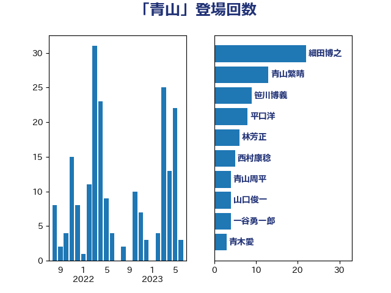

単語「青山」

| 細田博之 | 自由民主党 | 22 回 |
| 青山繁晴 | 自由民主党 | 13 回 |
| 笹川博義 | 自由民主党 | 9 回 |
| 平口洋 | 自由民主党 | 8 回 |
| 林芳正 | 自由民主党 | 6 回 |
| 西村康稔 | 自由民主党 | 5 回 |
| 青山周平 | 自由民主党 | 4 回 |
| 山口俊一 | 自由民主党 | 4 回 |
| 一谷勇一郎 | 日本維新の会 | 4 回 |
| 青木愛 | 立憲民主党 | 3 回 |
| 青木一彦 | 自由民主党 | 3 回 |
| 福山哲郎 | 立憲民主党 | 3 回 |
| 石橋通宏 | 立憲民主党 | 3 回 |
| 森本真治 | 立憲民主党 | 3 回 |
| 根本匠 | 自由民主党 | 3 回 |
| 末松信介 | 自由民主党 | 3 回 |
| 小林鷹之 | 自由民主党 | 3 回 |
| 和田有一朗 | 日本維新の会 | 3 回 |
| 伊藤忠彦 | 自由民主党 | 3 回 |
| 中曽根弘文 | 自由民主党 | 3 回 |
| 長谷川岳 | 自由民主党 | 2 回 |
| 野村哲郎 | 自由民主党 | 2 回 |
| 西銘恒三郎 | 自由民主党 | 2 回 |
| 萩生田光一 | 自由民主党 | 2 回 |
| 船田元 | 自由民主党 | 2 回 |
| 義家弘介 | 自由民主党 | 2 回 |
| 田村憲久 | 自由民主党 | 2 回 |
| 田名部匡代 | 立憲民主党 | 2 回 |
| 猪瀬直樹 | 日本維新の会 | 2 回 |
| 海江田万里 | 立憲民主党 | 2 回 |
| 永岡桂子 | 自由民主党 | 2 回 |
| 松原仁 | 立憲民主党 | 2 回 |
| 松下新平 | 自由民主党 | 2 回 |
| 杉本和巳 | 日本維新の会 | 2 回 |
| 後藤茂之 | 自由民主党 | 2 回 |
| 山東昭子 | 自由民主党 | 2 回 |
| 山本順三 | 自由民主党 | 2 回 |
| 小熊慎司 | 立憲民主党 | 2 回 |
| 宮内秀樹 | 自由民主党 | 2 回 |
| 大塚拓 | 自由民主党 | 2 回 |
| 塚田一郎 | 自由民主党 | 2 回 |
| 古賀友一郎 | 自由民主党 | 2 回 |
| 鬼木誠 | 立憲民主党 | 1 回 |
| 須藤元気 | 無所属 | 1 回 |
| 青柳仁士 | 日本維新の会 | 1 回 |
| 阿部知子 | 立憲民主党 | 1 回 |
| 鈴木馨祐 | 自由民主党 | 1 回 |
| 鈴木貴子 | 自由民主党 | 1 回 |
| 鈴木敦 | 国民民主党 | 1 回 |
| 赤澤亮正 | 自由民主党 | 1 回 |
| 竹内譲 | 公明党 | 1 回 |
| 竹内真二 | 公明党 | 1 回 |
| 福島みずほ | 社会民主党 | 1 回 |
| 田島麻衣子 | 立憲民主党 | 1 回 |
| 江藤拓 | 自由民主党 | 1 回 |
| 梅谷守 | 立憲民主党 | 1 回 |
| 末松義規 | 立憲民主党 | 1 回 |
| 木原稔 | 自由民主党 | 1 回 |
| 平山佐知子 | 無所属 | 1 回 |
| 小沼巧 | 立憲民主党 | 1 回 |
| 宮本岳志 | 日本共産党 | 1 回 |
| 太栄志 | 立憲民主党 | 1 回 |
| 城内実 | 自由民主党 | 1 回 |
| 吉田統彦 | 立憲民主党 | 1 回 |
| 北村経夫 | 自由民主党 | 1 回 |
| 勝部賢志 | 立憲民主党 | 1 回 |
| 伊藤俊輔 | 立憲民主党 | 1 回 |